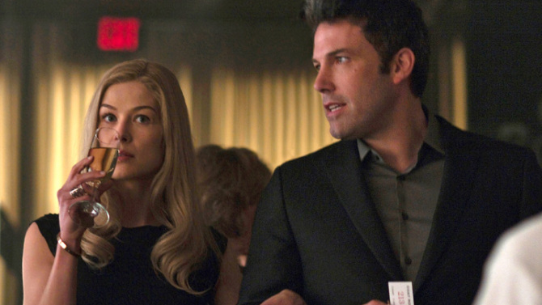

Gone Girl
On their fifth wedding anniversary, writing teacher Nick Dunne returns home to find his wife Amy missing.
Her disappearance receives press coverage, as Amy was the inspiration for her parents' popular Amazing Amy children's books.
Detective Rhonda Boney finds poorly concealed evidence of a struggle in the house. Suspicion mounts around
Nick, whose apathy is interpreted by the media as characteristic of a sociopath and even sows doubt in his twin sister Margo.
Don't breath
Rocky, Alex, and Money are three Detroit delinquents who make a living by breaking into houses and stealing valuables.
Three delinquents break into the house of Norman, a Gulf War veteran who is blind, to steal his money.
However, much to their horror, they discover that Norman is not as defenceless as he seems.